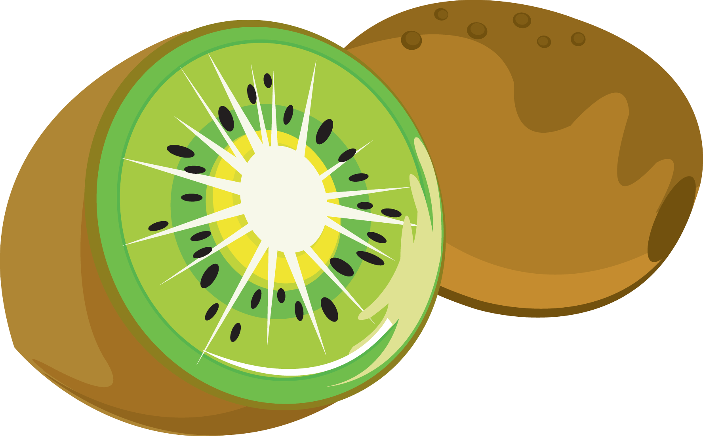

The kiwi – shortened from its full name, the kiwifruit – is actually a large berry that grows on a species of woody vine in the genus Actinidia. Kiwis have been famously cultivated in New Zealand, but this bold berry actually originated in eastern China. The kiwi typically grows in the shape of an oval and is roughly around the size of a typical chicken egg. Its skin is camel-colored, fibrous, and coated in a light fuzz. Despite its fuzzy covering, the kiwi’s skin is edible and tart. The kiwi’s flesh is bright green with a unique but pleasing texture and rows of distinctive tiny black seeds, which can also be eaten. Kiwis have a sweet, tart, and bold taste — making them a popular addition to a healthy breakfast or lunch.